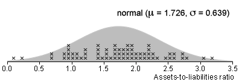

Confidence intervals
If we can find an approximate value for the standard error of an estimator, whether by formula or a simulation, an approximate 95% confidence interval can be found,
estimate - 2 s.e. to estimate + 2 s.e.
However the standard errors for some estimators cannot be so easily derived (or cannot be evaluated by readily available software).
Silkworm poisoning
We again consider estimation of the upper quartile of the survival times of silkworms after poisoning.
We again take several simulated samples from from a normal distribution with the same mean and standard deviation as the data,

The diagram below shows the distribution of estimation errors from 200 such samples:
We could use the standard deviation of these errors as the standard error to find a 95% confidence interval, but an alternative is to observe that 95% of the errors are between -0.197 and +0.197, so a 95% confidence interval would be
1.295 - 0.197 to 1.295 + 0.197
1.098 to 1.492
We are 95% confident that the underlying lower quartile is between 1.10 and 1.49.